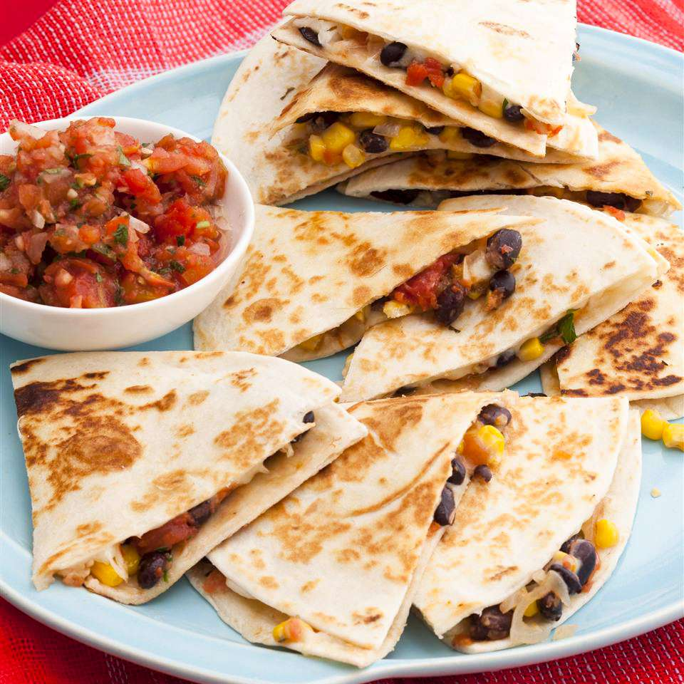

Black Bean and Corn Quesadillas

These black bean quesadillas are really cheesy, a little bit spicy, and a little bit sweet. My vegetarian husband goes crazy over them every time. Feel free to play around and add chicken or veggies if you desire. Don't forget the salsa and sour cream!
Ingredients
- 2 teaspoons olive oil
- 3 tablespoons finely chopped onion
- 1 (15.5 ounce) can black beans, drained and rinsed
- 1 (10 ounce) can whole kernel corn, drained
- ¼ cup salsa
- 1 tablespoon brown sugar
- ¼ teaspoon red pepper flakes
- 2 tablespoons butter, or as needed
- 8 (8 inch) flour tortillas
- 1 ½ cups shredded Monterey Jack cheese
Directions
- Heat olive oil in a large saucepan over medium heat. Cook and stir onion in hot oil until softened, about 2 minutes. Stir in beans and corn, then add salsa, brown sugar, and red pepper flakes; mix well. Cook until heated through, about 3 minutes. Remove from heat.
- Melt about 1 1/2 teaspoons butter in a large skillet over medium heat. Place a tortilla in the skillet. Sprinkle with 1/4 of the Monterey Jack cheese, then top with 1/4 of the bean mixture. Place another tortilla on top; cook until the bottom is golden, then carefully flip and cook until the other side is golden. Repeat with remaining tortillas and filling.